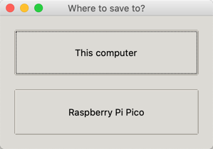

Thonny Python IDE
A lightweight Python IDE ideal for writing simple Python programs for first time users.
Thonny has the following screen areas.
Script Area
Python Shell
Interpreter
Thonny runs on Mac, Windows and Linux.
Running help()
You can enter the help() function in the main script area and then press the Play button. This will tell you
1
2
3
4
5
6
7
8
9
10
11
12
13
14
15
16
17
18
19
20
21
22
23
24
25
26
27
28
29
30
31
32
33
34
35
36
37
38 | MicroPython v1.14 on 2021-02-02; Raspberry Pi Pico with RP2040
Type "help()" for more information.
>>> %Run -c $EDITOR_CONTENT
Welcome to MicroPython!
For online help please visit https://micropython.org/help/.
For access to the hardware use the 'machine' module. RP2 specific commands
are in the 'rp2' module.
Quick overview of some objects:
machine.Pin(pin) -- get a pin, eg machine.Pin(0)
machine.Pin(pin, m, [p]) -- get a pin and configure it for IO mode m, pull mode p
methods: init(..), value([v]), high(), low(), irq(handler)
machine.ADC(pin) -- make an analog object from a pin
methods: read_u16()
machine.PWM(pin) -- make a PWM object from a pin
methods: deinit(), freq([f]), duty_u16([d]), duty_ns([d])
machine.I2C(id) -- create an I2C object (id=0,1)
methods: readfrom(addr, buf, stop=True), writeto(addr, buf, stop=True)
readfrom_mem(addr, memaddr, arg), writeto_mem(addr, memaddr, arg)
machine.SPI(id, baudrate=1000000) -- create an SPI object (id=0,1)
methods: read(nbytes, write=0x00), write(buf), write_readinto(wr_buf, rd_buf)
machine.Timer(freq, callback) -- create a software timer object
eg: machine.Timer(freq=1, callback=lambda t:print(t))
Pins are numbered 0-29, and 26-29 have ADC capabilities
Pin IO modes are: Pin.IN, Pin.OUT, Pin.ALT
Pin pull modes are: Pin.PULL_UP, Pin.PULL_DOWN
Useful control commands:
CTRL-C -- interrupt a running program
CTRL-D -- on a blank line, do a soft reset of the board
CTRL-E -- on a blank line, enter paste mode
For further help on a specific object, type help(obj)
For a list of available modules, type help('modules')
>>>
|
Save Options
You can save a python file in Thonny to either the Pico or to your local computer's file system.

first stop execution of any program you are running.
Downloading the Firmware
After you start up Thonny there will be a button in the lower right corner.
After you click on it you will see the following:
| Downloading 465408 bytes from https://github.com/raspberrypi/micropython/releases/download/pico-20210120/pico_micropython_20210121.uf2
Writing to /Volumes/RPI-RP2/firmware
100%
Waiting for the port...
Found 2e8a:0005 at /dev/cu.usbmodem0000000000001
Done!
|
Version
After you press play the following will appear in the console.
| MicroPython v1.13-290-g556ae7914 on 2021-01-21; Raspberry Pi Pico with RP2040
Type "help()" for more information.
>>> %Run -c $EDITOR_CONTENT
|
Background on Thonny
Micropython was originally developed by Damien George and first released in 2014. Some support of Thonny is being done the University of Tartu Institute of Computer Science in Estonia. Several features were sponsored by the Raspberry Pi Foundation